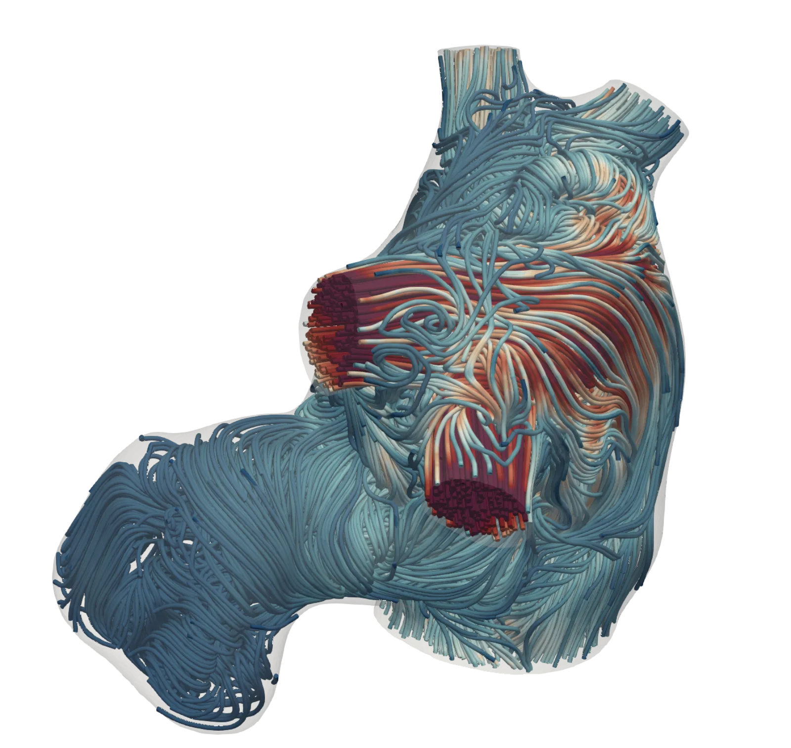
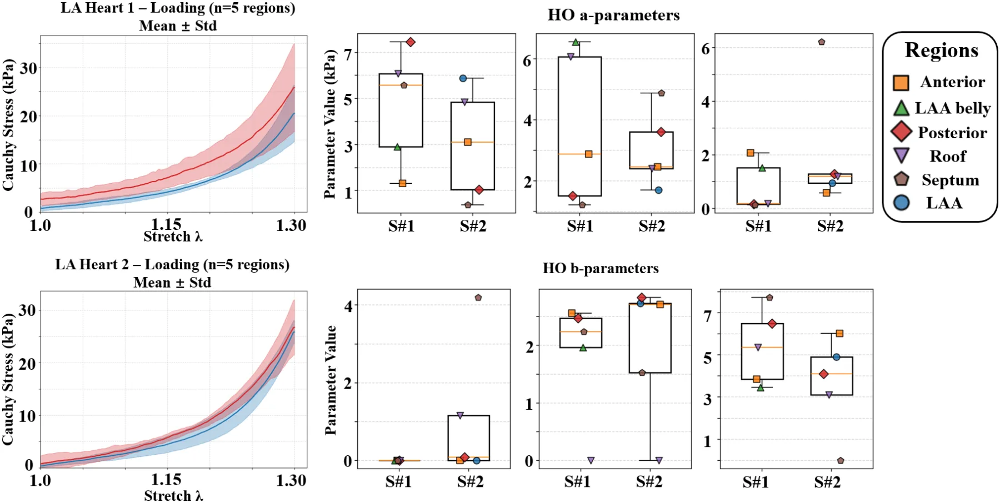
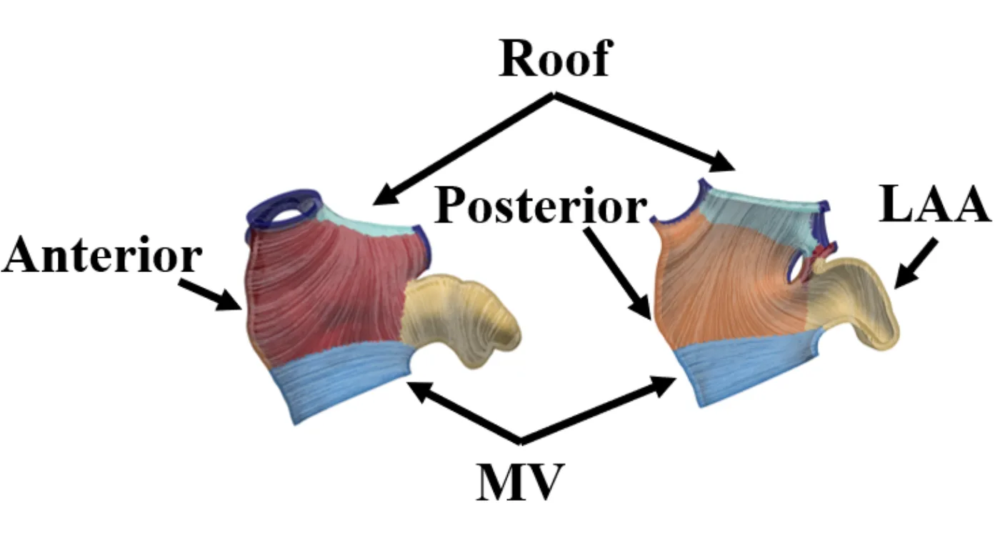
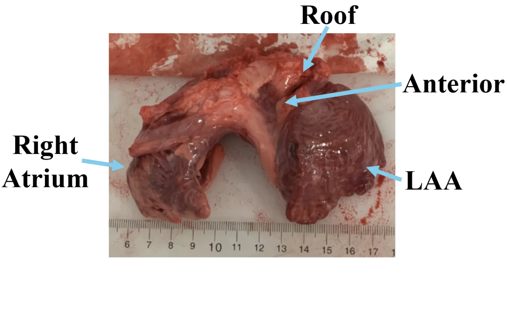
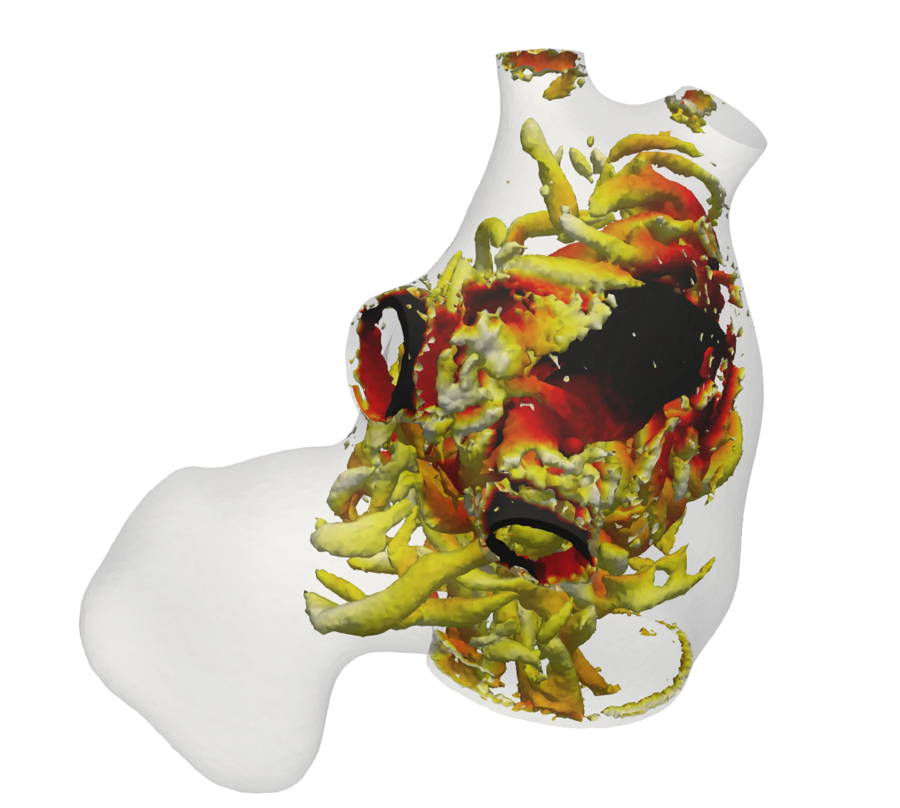
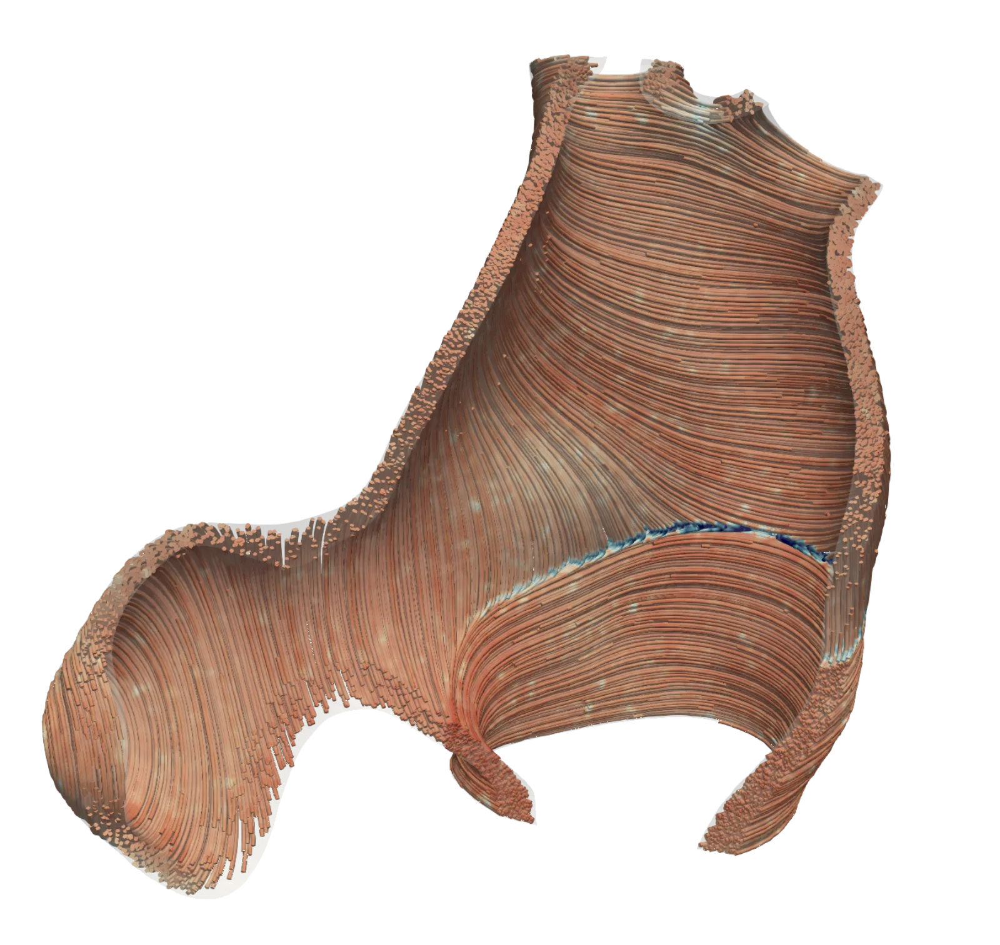

Multiphysics Simulation • Patient-Specific Modeling • Physics-Informed ML
Research centered on computational modeling of the cardiovascular system across scales—from
tissue-level finite element analysis to reduced-order hemodynamic simulations—with the goal
of enabling patient-specific digital twins of the heart.

Velocity streamlines through a patient-specific left atrium, coloured by
speed. Pulmonary-vein inflow jets organise into a recirculating body flow that sweeps
the appendage.
Developed an inverse finite element analysis (IFEA) framework to personalize cardiac
tissue material parameters from CT imaging data.
Nested optimization combining genetic algorithm with Sellier’s method to calibrate Holzapfel–Ogden constitutive model
Quantified the impact of variable vs uniform wall thickness on left atrial stress distribution and wall motion

Biaxial stress–stretch response of two left atria (mean ± SD
across five regions) and the fitted Holzapfel–Ogden parameters. Regional spread
spans roughly an order of magnitude — the motivation for abandoning uniform
material properties.

Regional partition with mapped fibre architecture: anterior, posterior,
roof, appendage and mitral-valve regions, each assigned its own constitutive
parameters.Wall stress through the cardiac cycle, recovered by the inverse
finite-element loop.

Dissected porcine specimen with landmarks labelled, prepared for
biaxial testing. Experimental work carried out at Kennesaw State University.
Image-Based Blood Flow Modeling of the Left Atrium
Developed an end-to-end workflow for image-based hemodynamic modeling of the left atrium
with imposed wall motion.
Extracted wall kinematics from time-resolved cine CT segmentations (10 phases per cardiac cycle) via image registration
Applied Fourier-interpolated wall motion as boundary conditions with patient-specific contrast agent inflow profiles
Evaluated wall shear stress, velocity, and concentration across the LA body and left atrial appendage
Velocity field over one cardiac cycle with imposed wall motion.

Vortex structures shed from the pulmonary-vein inflow jets, shown as
isosurfaces.Contrast-agent transport, used to evaluate washout of the appendage
— the region where stasis precedes thrombus formation.Wall stress distribution across the atrium under imposed kinematics.
Electrical Activation Mapping via Graph Neural Network
Attention-enhanced GraphSAGE architecture for predicting cardiac activation times as a
surrogate for finite element simulations.
Currently implemented for structural mechanics; planned extension to electrophysiology and activation mapping
Action potential propagating across the atrial surface. Producing maps
like this by finite-element solve is what the graph network is being trained to
replace.

Myofibre architecture across the wall. Fibre orientation sets conduction
anisotropy, and is an input feature to the network.
Lumped-Parameter Network Calibration
Calibrated full-circulation lumped-parameter network models to match 13 clinical
hemodynamic targets using complementary optimization and inference strategies.
CMA-ES optimization for point estimates across single-fiber and time-varying elastance chamber models
DREAM MCMC for Bayesian posterior distributions and uncertainty quantification
End-to-end pipeline that produces patient-specific hemodynamic simulations directly from
volumetric angiography in minutes. Integrates ML-based segmentation with 0D/1D
Navier–Stokes solvers in SimVascular.
Automated pipeline from medical images to blood flow simulation results
Automatic boundary condition tuning via CMA-ES optimization
1D Navier–Stokes + 0D lumped-parameter solvers
Interactive GUI for cardiac inflow waveform design